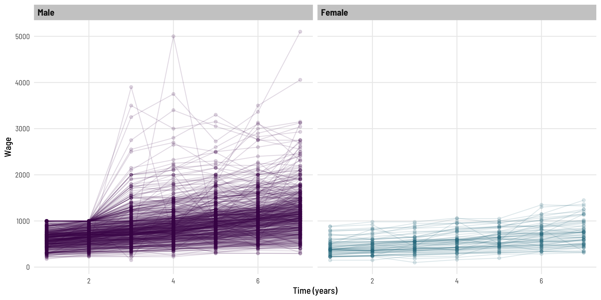
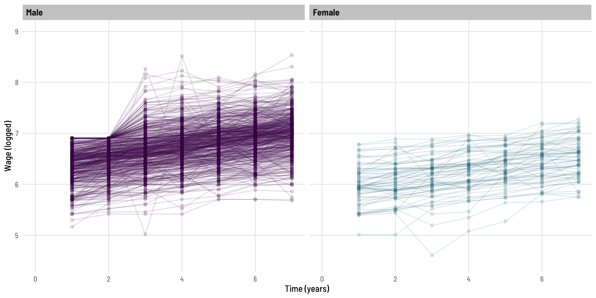
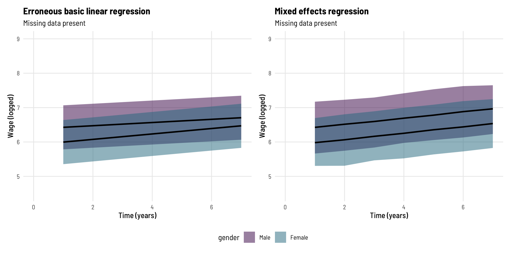
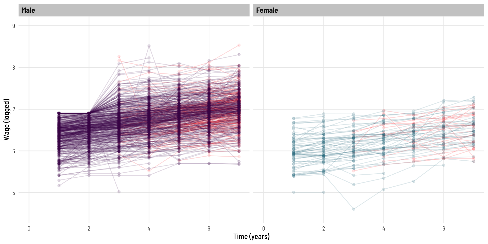

As consultant statisticians, we are often approached by people who have already carried out some preliminary data analysis and who are now looking to move onto something more complex. As missing data is generally present (or rather not present!) in health-related datasets, we find this is a question that is regularly raised:
“Can we use mixed models, since they use all available data?”
Working through even the basics on this topic will mean one will also have to work through challenging and varied (often cryptic) statistical nomenclature. This post is a worked example and was motivated by reading this paper. It has an interesting example of ‘missing data and mixed models’ that we thought could benefit from some figures and commentary to aid in the understanding of what is achieved.
Setting the scene
We’re going to use a dataset from the AER package, a Panel Data from a Study of Income Dynamics (read more here).
In brief, this dataset has:
Complete data on 595 individuals
Data collected between 1976 and 1982
7 observations per person (annual assessements)
A focus on modelling the wage data over time
We acknowledge that the issues related to gender pay differences and trends are a sensitive subject and are simply using this example as it was and is a readily available, tidy, tangible, cross-discipline dataset that allows the demonstration of the statistical principals of interest.
Research question
Are there differences in the rate of wage growth between males and females over time (in this dataset)?
That question is quite straightforward to answer here, but the motivating commentary is really around how mixed effects model can be beneficial in the presence of systematic missing (follow-up) data - with a focus on parameter estimates and their graphical interpretation.
Missing follow-up data (lost to follow, attrition, drop out) is often seen in health research datasets. The data might be Missing At Random, it my be Missing Completely At Random, the important nuances of these are largely out of scope for this post.
# A tibble: 6 × 16
# Groups: id [1]
experience weeks occupation industry south smsa married gender union
<int> <int> <fct> <fct> <fct> <fct> <fct> <fct> <fct>
1 3 32 white no yes no yes Male no
2 4 43 white no yes no yes Male no
3 5 40 white no yes no yes Male no
4 6 39 white no yes no yes Male no
5 7 42 white yes yes no yes Male no
6 8 35 white yes yes no yes Male no
# ℹ 7 more variables: education <int>, ethnicity <fct>, wage <dbl>, year <fct>,
# id <fct>, lwage <dbl>, t <int>
How much data do we have?
Code
dat %>%ungroup() %>%select(gender, t) %>%tbl_summary(by = gender,statistic =all_categorical() ~"{n}")
Characteristic
Male, N = 3,6961
Female, N = 4691
t
1
528
67
2
528
67
3
528
67
4
528
67
5
528
67
6
528
67
7
528
67
1 n
Data for 595 individuals across 7 time points - as expected.
And, what does the wage data look like?
Code
dat %>%ggplot(aes(t, wage, colour = gender)) +geom_point(alpha =0.15) +geom_line(aes(group = id), alpha =0.15) +facet_wrap(~ gender) +scale_colour_viridis_d(option ="viridis", end =0.4) +theme_clean() +theme(legend.position="none") +labs(x ="Time (years)", y ="Wage")

We can see that, generally the wage goes up at a fairly steady rate for most individuals across the 7 years of follow-up. We can also see some characteristics (upper skew, heteroskedasticity) that are likely to invalidate some modeling assumptions.
Let’s look at the log of wage.
Code
dat %>%ggplot(aes(t, lwage, colour = gender)) +geom_point(alpha =0.15) +geom_line(aes(group = id), alpha =0.15) +facet_wrap(~ gender) +scale_colour_viridis_d(option ="viridis", end =0.4) +theme_clean() +theme(legend.position="none") +labs(x ="Time (years)", y ="Wage (logged)") +coord_cartesian(xlim =c(0,7),ylim =c(4.5,9))

This now looks more homoskedastic (variability looks more consistent over time).
Modelling the complete data
Erroneous basic linear regression model
To address the question of “are there differences between genders in the rate of wage growth”, we are going to fit a gender by time interaction term which will give us an indication of if ‘as time changes’ whether the outcome (logged wage) changes at a different rate for each gender.
We can see there is an effect of gender present, and an effect of time (the growth overtime we saw in the original plot), but the very small beta coefficient (relative to the scale of data we are working with) and the p-value of 0.6 are suggestive that the rate of wage growth over time does not differ significantly between genders.
To view this, we’re not going to use geom_smooth or stat_summary as we might do when graphing on-the-fly, rather we will use the predict() function to create data for our line of best fit.
To set a coding framework which we’ll use again later in the post, we’ll create a new dataset and use predictions to draw our (straight) line.
These lines look parallel - suggestive of no difference in growth rates between the genders (in line with the non-significant interaction term we saw).
Of course, we have not adjusted for the within person correlation present in the data. The model above is inappropriate as one of the main assumptions of the model is violated - the data points are not all independent (we know there are 7 from each individual).
Mixed effects model
Here we run a fairly basic linear mixed effects model, the model has the same fixed effects terms as above (the interaction term we are curious about) but also includes a random effect, that is, the intercept is allowed to varied for each individual.
Code
mod2 <-lmer(lwage ~ gender * t + (1| id), data = dat)export_summs(mod2, error_format ="[{conf.low}, {conf.high}]",error_pos ="right", digits =3,statistics =c(N ="nobs"))
Model 1
(Intercept)
6.340 ***
[6.307, 6.373]
genderFemale
-0.456 ***
[-0.553, -0.358]
t
0.097 ***
[0.095, 0.100]
genderFemale:t
-0.005
[-0.012, 0.003]
N
4165
*** p < 0.001; ** p < 0.01; * p < 0.05.
Lets also fit the predicted values from this model.
With standard linear regression model (first used), we used predict to generate a ‘prediction interval’. With linear mixed effects models, we do no have the same function available (that will incorporate the random effects variability into the prediction interval), so rather than calculating these with a formula, we simulate! Some extra content on this can be read here or (somewhat less so) here.
This use of simulation is part of the reason behind the confidence intervals not being parallel.
The coefficients have the same value in each model as these represent the fixed effect
The confidence intervals for those coefficients are slightly narrower in Model 2, this is because some of the variation present [within Model 1] is explained by the random effects [present in Model 2 and not Model 1].
We can see this when we plot the predicted values side by side.
We now create a modified copy of the dataset whereby wage data is missing as a function of the previous wage value.
That is, as a person’s wage gets higher, their probability of not completing the following years survey is increased. I was unable to implement the exact same missing data function as the inspiring example, but the below is similar and serves the same purpose. Without diving too far down the missing data hole (intended), this is an example of data [missing at random](https://www.ncbi.nlm.nih.gov/books/NBK493614/#:~:text=Missing%20completely%20at%20random%20(MCAR,and%20those%20with%20complete%20data), in the fact that the data missing is related to something observed (by design), that being, the previous years wage value.
Code
mdat <- dat %>%group_by(id) %>%mutate(plwage =c(0, lwage[1:6]),pt =1/ (1+exp(-6.9+ plwage)),mlwage =case_when(pt >0.5~ lwage, pt <0.5~0),is_zero_following =ifelse(mlwage ==0, 1, 0),# Use cummax to make this vector 1 from the first occurrence of 0 onwardsis_zero_following =cummax(is_zero_following),# Replace wage with 0 where is_zero_following is 1mlwage =ifelse(is_zero_following ==1, NA, mlwage))
What impact has this had on the data? We can see a significant loss of data, especially across the latter years.
This also looks to have impacted males more than females.
Now the model is indicating that there is a strong interaction effect for gender by time. The coefficient of the interaction term implies that (logged) wages increase at a faster rate (over time) for females than they do for males.
We can see the predicted line and bands (95% prediction interval) represent the (non-missing) data well, and we can see the difference in slope between genders - the observed significant interaction term.
Missing - Mixed effects model
Code
mod4 <-lmer(mlwage ~ gender * t + (1| id), data = mdat)export_summs(mod4, error_format ="[{conf.low}, {conf.high}]",error_pos ="right", digits =3,statistics =c(N ="nobs"))
Model 1
(Intercept)
6.341 ***
[6.311, 6.372]
genderFemale
-0.457 ***
[-0.546, -0.368]
t
0.090 ***
[0.087, 0.093]
genderFemale:t
0.003
[-0.004, 0.011]
N
3101
*** p < 0.001; ** p < 0.01; * p < 0.05.
When we run the mixed effects model on the dataset with missing data, we (correctly) do not see a significant interaction effect.
Our mixed effects model on the dataset with a lot of missing data (ME - Missing) generates quite similar estimates to what we know the ‘truth’ to be from the model on the complete data (ME - Complete).
These lines (predicted lines; by gender) look parallel (as they should). Notably with the Males, we see the predicted line “pulled up” in the direction of the missing data even though that data was not available to the model - this is because the model has leveraged the slope of the data it did have access to, at the individual (person) level, when converging on its estimates.
If the erroneous interaction effect (non-parallel lines) was not obvious in the plot separated by gender, here we see the predicted lines on the same plot for each model.
Code
p_mod3 %>%ggplot(aes(t, lwage.fit, ymin = lwage.lwr, ymax = lwage.upr, fill = gender)) +geom_ribbon(alpha =0.5) +geom_line(colour ="black", linewidth =1) +scale_fill_viridis_d(option ="viridis", end =0.4) +theme_clean() +labs(x ="Time (years)", y ="Wage (logged)",title ="Erroneous basic linear regression",subtitle ="Missing data present") +coord_cartesian(xlim =c(0,7),ylim =c(4.5,9)) -> p5p_mod4 %>%ggplot(aes(t, fit, ymin = lwr, ymax = upr, fill = gender)) +geom_ribbon(alpha =0.5) +geom_line(colour ="black", linewidth =1) +scale_fill_viridis_d(option ="viridis", end =0.4) +theme_clean() +labs(x ="Time (years)", y ="Wage (logged)",title ="Mixed effects regression",subtitle ="Missing data present") +coord_cartesian(xlim =c(0,7),ylim =c(4.5,9)) -> p6p5 + p6 +plot_layout(guides ="collect") &theme(legend.position='bottom')

Bonus content
Less aggressive missingness
What if we whip through the same process and comparison, in a setting that ‘less aggressively’ has drop out with increasing wage and also some additional random missingness throughout.
Code
mdat <- dat %>%group_by(id) %>%mutate(plwage =c(0, lwage[1:6]),pt =1/ (1+exp(-7.2+ plwage))) %>%# Less aggressive dropout as a function of agerowwise() %>%mutate(pt =case_when(pt >0.5&runif(1) <0.10& t >2~0, # Adding an underlying random component to dropout T ~ pt)) %>%group_by(id) %>%mutate(mlwage =case_when(pt >0.5~ lwage, pt <0.5~0),is_zero_following =ifelse(mlwage ==0, 1, 0),is_zero_following =cummax(is_zero_following),mlwage =ifelse(is_zero_following ==1, NA, mlwage))
We can see, the (erroneous) basic linear regression still inappropriately suggests a significant interaction effect is present, while the mixed effects models continues to perform well (relative to the model using the complete data).
Completely random missingness
What if the dropout is completely at random?
Note, this is dropout at random, not sporadic missingness, these are two different things.
Code
mdat <- dat %>%group_by(id) %>%rowwise() %>%mutate(pt =1,pt =case_when(runif(1) <0.10& t >2~0, # Implementing completely random dropout T ~ pt)) %>%group_by(id) %>%mutate(mlwage =case_when(pt >0.5~ lwage, pt <0.5~0),is_zero_following =ifelse(mlwage ==0, 1, 0),is_zero_following =cummax(is_zero_following),mlwage =ifelse(is_zero_following ==1, NA, mlwage))

ME - Complete
Basic - Missing
ME - Missing
(Intercept)
6.340 ***
[6.307, 6.373]
6.330 ***
[6.300, 6.359]
6.333 ***
[6.301, 6.366]
genderFemale
-0.456 ***
[-0.553, -0.358]
-0.456 ***
[-0.544, -0.368]
-0.456 ***
[-0.553, -0.359]
t
0.097 ***
[0.095, 0.100]
0.102 ***
[0.095, 0.109]
0.099 ***
[0.096, 0.102]
genderFemale:t
-0.005
[-0.012, 0.003]
-0.007
[-0.029, 0.014]
-0.003
[-0.012, 0.005]
N
4165
3379
3379
*** p < 0.001; ** p < 0.01; * p < 0.05.
The basic regression model is no long suggesting there is a significant gender by time interaction effect, and comparatively, all three models give similar estimates.
Conclusion
We have seen that in the face of missing follow-up data, it is a grave mistake to continue with a basic linear regression model. We have then seen that mixed effects models are quite robust in dealing with the issue of missing data (as it relates to drop out) and return coefficients and standard errors similar to those of a complete-data model.
Acknowledgements
Thanks to Elizabeth McKinnon, Zac Dempsey, and Wesley Billingham for providing feedback on and reviewing this post.
You can look forward to seeing posts from these other team members here in the coming weeks and months.
Reproducibility Information
To access the .qmd (Quarto markdown) files as well as any R scripts or data that was used in this post, please visit our GitHub: